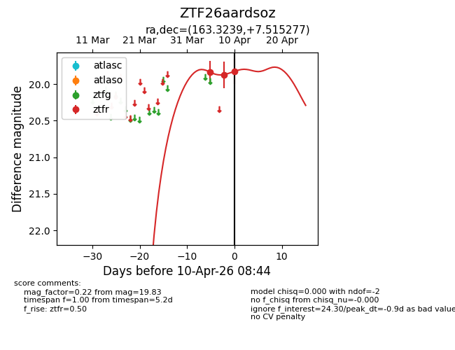
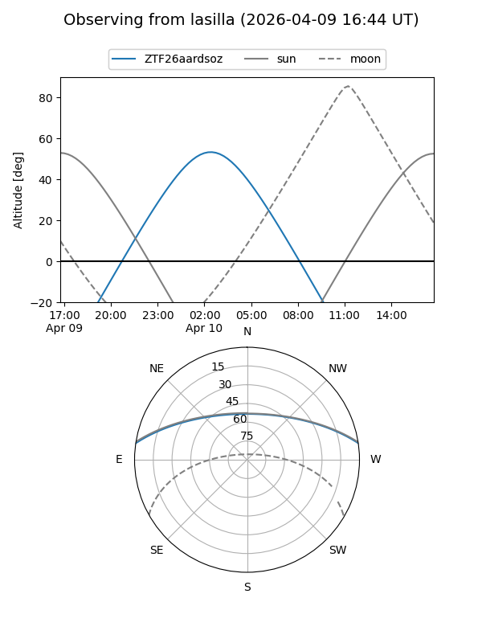
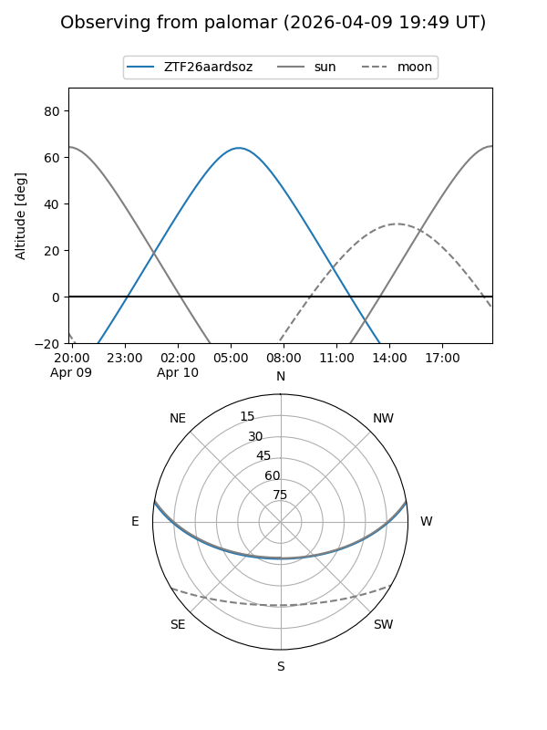
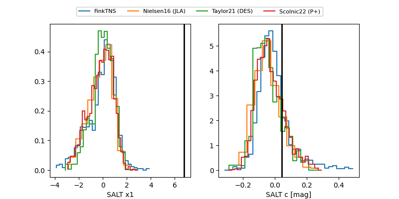

ZTF26aardsoz
Target ZTF26aardsoz at 2026-04-10 08:50
Aliases and brokers:
FINK: link
Lasair: link
ALeRCE: link
alt names
ZTF26aardsoz (ztf,fink_ztf)
Coordinates:
equatorial (ra, dec) = 163.3239,+7.51528
equatorial (HMS+DMS) = 10:53:17.73,+07:30:55.00
galactic (l, b) = (242.4682,+55.82447)
Flags:
Photometry:
last ztfr=19.83
3 ztfr detections
Lightcurve

Visibility


Additional plots
